Після входу ви потрапите на головну панель (Dashboard).
3. Налаштування часу (Period та Grace)
Це найважливіший момент, щоб сповіщення приходили вчасно.
"Period": оберіть "1 minutes" (це як часто плата буде "дзвонити" серверу).
"Grace Time": теж поставте "1 minutes" (це запас часу: якщо плата не відповіла через хвилину, сервер почекає ще хвилину і лише тоді вишле тривогу).
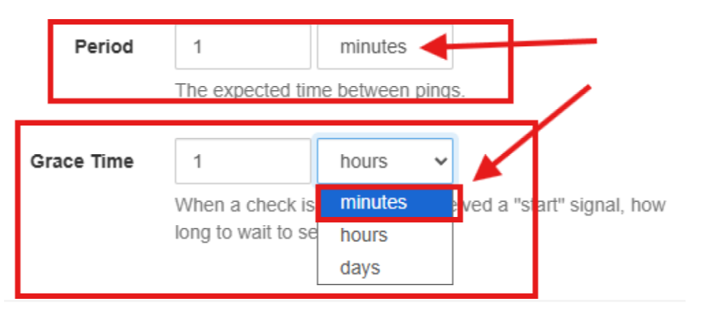
Скрін 6 — Налаштування Period = 1 minutes і Grace Time = 1 minutes.
Натисніть кнопку "Save" внизу вікна.
4. Отримання посилання для коду
У тому ж рядку чека ви побачите адресу, яка починається на https://hc-ping.com/....
Натисніть на неї, щоб скопіювати.
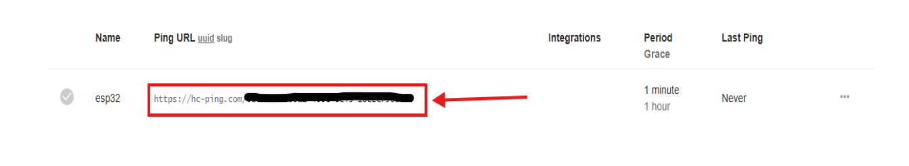
Скрін 8 — Посилання hc-ping.com у рядку чекера.
Саме це посилання потрібно буде вставити, коли будете приєднувати плату до Wi-Fi.
5. Встановити правильний часовий пояс
Натисніть справа зверху Account. Потім оберіть Account Settings, нижче знайдіть Preferred Time Zone.
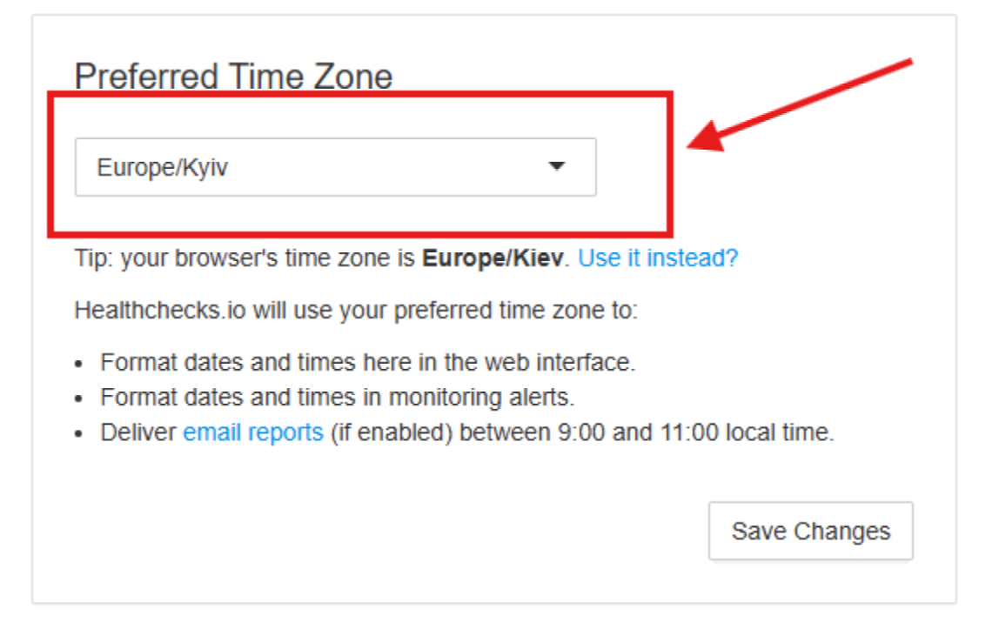
Скрін 9 — Account → Account Settings.
Оберіть Europe/Kyiv і натисніть Save Changes.
6. Підключення Telegram (Integrations)
У верхньому меню сайту натисніть на вкладку "Integrations".
Знайдіть у списку іконку Telegram і натисніть кнопку "Add Integration" поруч із нею.
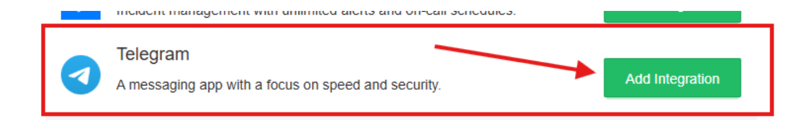
Скрін 11 — Integrations → Telegram → Add Integration.
Натисніть на посилання на їхнього бота (наприклад, @healthchecks_io_bot).
У Telegram натисніть "Start".
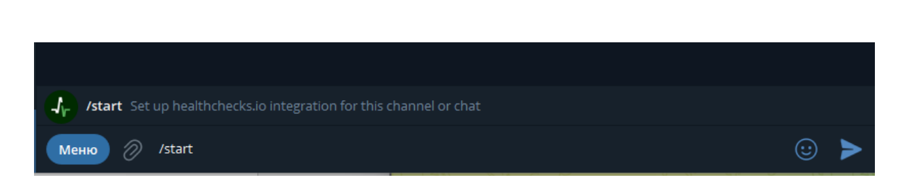
Скрін 12 — Telegram: запуск бота (Start).
Бот надішле вам посилання для підтвердження — натисніть на нього.
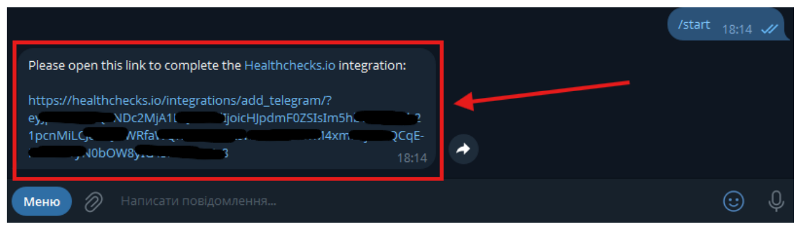
Скрін 13 — Вибір проекту → Connect Telegram.
Вас поверне на сайт. Виберіть проект, до якого додати Telegram, і натисніть "Connect Telegram".
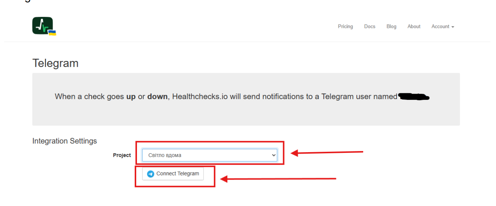
Скрін 13 — Вибір проекту → Connect Telegram.
7. Перевірка (Кнопка Test)
Знову перейдіть у вкладку "Integrations".
Навпроти Telegram ви побачите кнопку "Test".
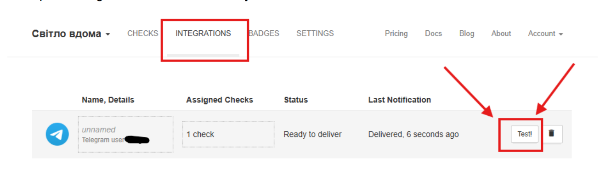
Скрін 14 — Кнопка Test для Telegram.
Натисніть її — якщо в Telegram прийшло повідомлення "This is a test message", значить, зв'язок налаштовано ідеально!
Порада: Якщо ви хочете, щоб сповіщення приходили всій родині — створіть групу в Telegram, додайте туди цього бота і зробіть прив’язку вже всередині групи.
Налаштування індикатора через Web-інтерфейс
1. Підготовка та активація режиму налаштування
З КОРОБКИ при подачі живлення на плату відразу повинен блимати синій індикатор!
Якщо ні:
- Відкрийте корпус: обережно зніміть задню кришку плати.
- На ній має стабільно засвітитися червоний індикатор (живлення є).
- Знайдіть кнопку BOOT,(ПОКАЗАНО НА ОСТАННЬОМУ СКРІНШОТІ ВНИЗУ СТОРІНКИ) затисніть її на 5 секунди та відпустіть.
- Якщо синій індикатор почав блимати — плата створила власну мережу Wi-Fi.
2. Підключення до плати
Підключіться до Wi-Fi мережі ESP32C3-SvitloBot (пароль 12345678).
Якщо пристрій запитає, чи залишатися в мережі без інтернету — обов'язково обирайте "Так" або "Завжди приєднуватись".
Має автоматично відчинитись вікно з Configure Wi-Fi. Якщо не відчинилось:
Відкрийте браузер і введіть: 192.168.4.1 (ви маєте бути підключені до Wi-Fi плати).
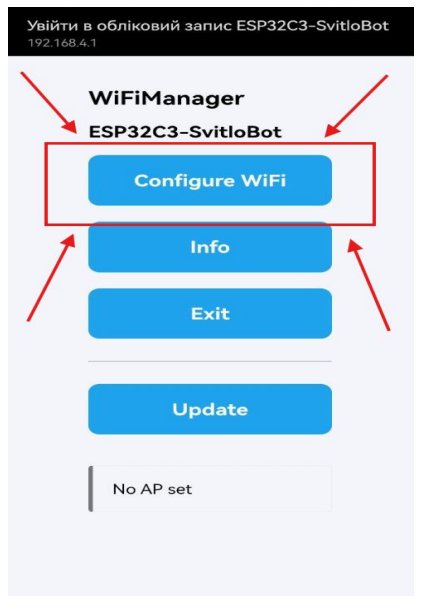
Скрін 18 — Відкриття 192.168.4.1 у браузері.
Натисніть Configure WiFi. Оберіть вашу точку доступу (ваш роутер). Введіть:
- SSID — назва домашнього Wi-Fi
- Password — пароль
- Server URL — ваше посилання з HealthChecks (
https://hc-ping.com/...)
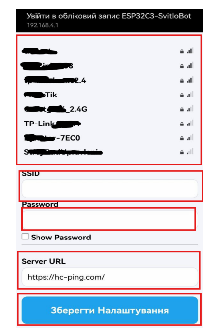
Скрін 18 — Configure WiFi: SSID / Password / Server URL.
4. Збереження та перевірка
Натисніть "Зберегти Налаштування". Плата перезапуститься.
Результат: тепер на платі мають одночасно світитися і червоний, і синій індикатори.
Призначення Кнопок на платі,RST-перезапуск,BOOT-скидання WI-FI мережі і пристрою(натиснути і тримати 5 сек) .
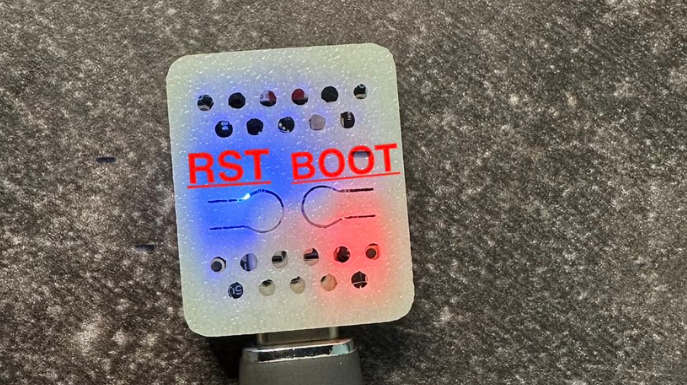
Скрін — Призначення кнопок на платі.